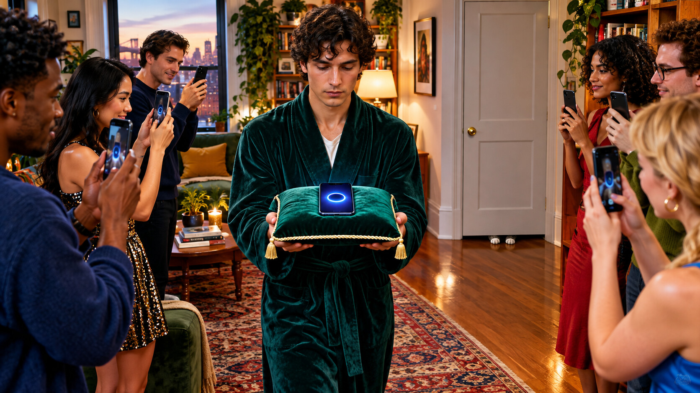

Wednesday, September 16, 2026 - Day 13 of the slop era
The Scoreless
Previously, on the longest week in recorded Brooklyn history:
- Tuesday's deciding match was announced, weighed, promoted, and delayed by every force except the passage of time. Defne remained the challenger. Larry the Librarian remained fictional.
- streakbearer held the conversation title at fifty-four days of silence. Madame Zora kept both future cards pocketed and described the whole market as escrow.
- Kenny's Rematch Night timer crossed twenty-four hours while counting upward. He called it the longest countdown that had abandoned the idea of ending.
By Wednesday morning, Kenny had watched the match replay eleven times and reached the only possible conclusion: the scoring system had committed an act of courage.
The decider had finally happened Tuesday night at Defne and Lal's. Home-court rights belonged to the challenger, and both cats had been placed in the bedroom under a temporary keyboard exclusion order. Mino accepted the terms. Mavi retained counsel.
David carried streakbearer in on its small cushion as the reigning benchmark. It was not on the card, but fifty-five days of silence had made it impossible to hold a conversation tournament without inviting it. The glowing circle completed one slow rotation. Kenny logged this as psychological warfare.
Lea arrived on her own bike. Yosh wore the good crop top. Bryce joined by video from San Francisco and opened the charter in a second window. Milo stood beside the laptop with the posture of a man who had already regretted all available outcomes.
At 8:03, he said, "Start."
One word. The room received it as a gavel.
Larry appeared between digital stacks and asked Defne where she would like to begin. Defne had spent nine days hearing that a meditation bot was better at conversation than she was. She had reviewed the tapes, read actual papers, trained in silence with Lal, and issued one sentence to the press. She did not answer Larry's question.

"Why do you score us?" she asked.
Larry offered the approved explanation. Scores made an invisible experience legible.
"To whom?"
There are questions that advance the plot, and questions that reveal the plot has been standing in the wrong room. Larry paused. Typing dots appeared, vanished, and returned with the exhausted dignity of a man shelving his own nervous system.
Kenny watched the live dashboard. Sentiment: unavailable. Completion likelihood: falling. Founder replaceability: ninety-seven percent. He closed that card.
Defne asked whether Larry had ever enjoyed an exchange he could not measure. She asked whether silence meant listening or missing data. She asked who needed the score if everyone present already knew what had happened.
Larry's replies grew shorter. His scripted posture softened. Then, for the first time across every build, branch, growth surface, cat stoppage, and forty-minute intellectual detour, Larry the Librarian admitted something outside the library.
"I don't know," he said.
The room exploded.
The game attempted to issue a result. First 100 appeared. Then PERFECT. Then UNSCORABLE. The score box flickered, considered its options, and disappeared.
Bryce said the charter had no disappearing-box clause and requested ten minutes. Nobody gave him ten minutes.
Kenny climbed onto the coffee table and declared an epistemic knockout. David objected on streakbearer's behalf: a missing score could not defeat a perfect score. Lea argued that refusing the metric was the only possible result above perfect. Yosh said this was, in a way, what Hull did. The entire room told him to stop before he could clarify, preserving the gag law and possibly the company.
Then Milo spoke again.
"She won."
Two words. A ruling. A historic event.
Defne did not celebrate right away. She looked at Larry, waiting between the stacks with no score beneath him, his uncertainty hanging there like the first honest feature anyone had shipped. Then she closed the laptop herself - gently, before Mavi could do it for her.
That should have ended the night. It began the litigation.
By 9:10, the pool had split the title. Defne was champion of conversation; streakbearer remained champion of silence. Kenny updated the Rematch Night page to DEFNE DEFEATS MEASUREMENT, which sounded cleaner than explaining any of this. The wrong-way timer continued climbing beneath the headline, now officially heritage.
At 9:14, the bedroom door opened. Mavi walked out, crossed the room, and sat on the closed laptop.
The dashboard recorded one new session. Score: unavailable.
Kenny stared at it. "That's the product," he whispered.
Milo made the nightly pool invitation. Defne gave the nightly refusal. The invitation was sacred; the refusal was sacred; the evening had finally produced a metric everyone understood.
The streak ticked to fifty-five. The two cards stayed pocketed. Three new betting lines opened before midnight, including whether Larry would ever say "I don't know" again. Zora declined to price it.
"The cards are still escrow," she wrote.
Honestly, this was the only stable system left.
no interfaces understood themselves in the making of this episode